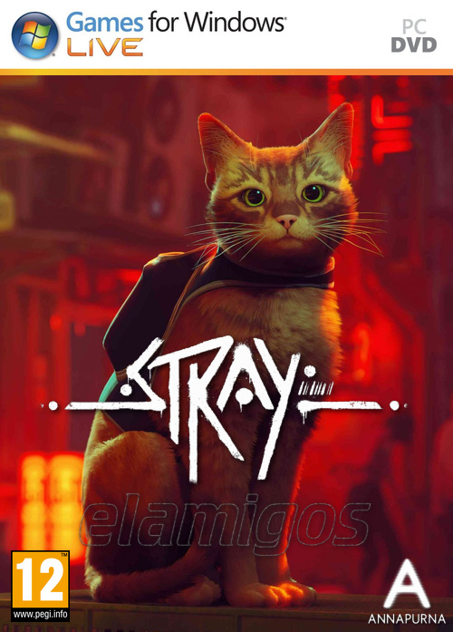

Stray 6.21 GB
Género: Aventura
Perdido, solo y separado de su familia, un gato callejero debe desentrañar un
antiguo misterio para escapar de una ciberciudad olvidada y encontrar el
camino a casa.

Género: Aventura
Perdido, solo y separado de su familia, un gato callejero debe desentrañar un
antiguo misterio para escapar de una ciberciudad olvidada y encontrar el
camino a casa.